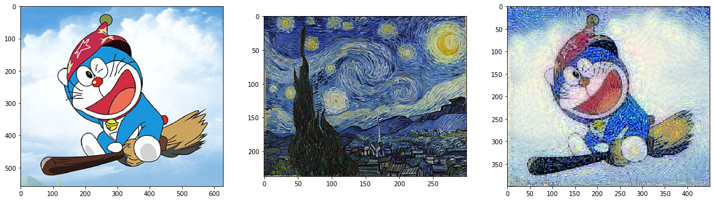
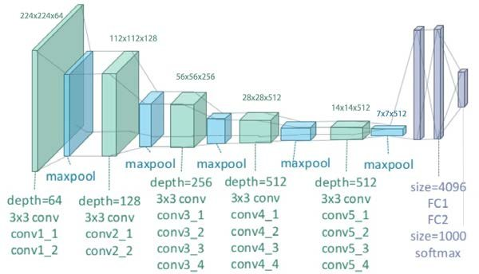
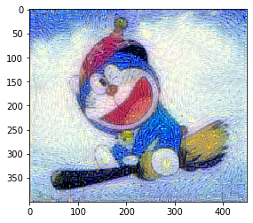

1 | !lspci | grep -i nvidia |
02:00.0 3D controller: NVIDIA Corporation GP100GL [Tesla P100 PCIe 16GB] (rev a1)
1 | import os |
1 | import numpy as np |
Using TensorFlow backend.
1 | base_image_path = "dora.png" |
1 | plt.figure(figsize=(20,20)) |
<matplotlib.image.AxesImage at 0x7f4a2d7e0320>


1 | def preprocess_image(image_path): |
1 | total_variation_weight = 1 |
WARNING: Logging before flag parsing goes to stderr.
W0814 07:28:44.852089 140562742982464 deprecation_wrapper.py:119] From /home/rczhang/miniconda3/envs/ali_comp/lib/python3.6/site-packages/keras/backend/tensorflow_backend.py:517: The name tf.placeholder is deprecated. Please use tf.compat.v1.placeholder instead.
匹配方案
- 使用每个卷积块的第一个卷积层输出来匹配样式(称 之为样式层)，和第四块中的最后一个卷积层来匹配内容(称之为内容层)
- 这里我们选取比较靠后的内容层，以避免合成 图像保留过多内容图像的细节
1 | model = vgg19.VGG19(input_tensor=input_tensor, |
W0814 07:28:44.914284 140562742982464 deprecation_wrapper.py:119] From /home/rczhang/miniconda3/envs/ali_comp/lib/python3.6/site-packages/keras/backend/tensorflow_backend.py:74: The name tf.get_default_graph is deprecated. Please use tf.compat.v1.get_default_graph instead.
W0814 07:28:44.925884 140562742982464 deprecation_wrapper.py:119] From /home/rczhang/miniconda3/envs/ali_comp/lib/python3.6/site-packages/keras/backend/tensorflow_backend.py:4138: The name tf.random_uniform is deprecated. Please use tf.random.uniform instead.
W0814 07:28:45.143045 140562742982464 deprecation_wrapper.py:119] From /home/rczhang/miniconda3/envs/ali_comp/lib/python3.6/site-packages/keras/backend/tensorflow_backend.py:3976: The name tf.nn.max_pool is deprecated. Please use tf.nn.max_pool2d instead.
W0814 07:28:48.193835 140562742982464 deprecation_wrapper.py:119] From /home/rczhang/miniconda3/envs/ali_comp/lib/python3.6/site-packages/keras/backend/tensorflow_backend.py:174: The name tf.get_default_session is deprecated. Please use tf.compat.v1.get_default_session instead.
W0814 07:28:48.205155 140562742982464 deprecation_wrapper.py:119] From /home/rczhang/miniconda3/envs/ali_comp/lib/python3.6/site-packages/keras/backend/tensorflow_backend.py:181: The name tf.ConfigProto is deprecated. Please use tf.compat.v1.ConfigProto instead.
Model loaded.
_________________________________________________________________
Layer (type) Output Shape Param #
=================================================================
input_1 (InputLayer) (None, None, None, 3) 0
_________________________________________________________________
block1_conv1 (Conv2D) (None, None, None, 64) 1792
_________________________________________________________________
block1_conv2 (Conv2D) (None, None, None, 64) 36928
_________________________________________________________________
block1_pool (MaxPooling2D) (None, None, None, 64) 0
_________________________________________________________________
block2_conv1 (Conv2D) (None, None, None, 128) 73856
_________________________________________________________________
block2_conv2 (Conv2D) (None, None, None, 128) 147584
_________________________________________________________________
block2_pool (MaxPooling2D) (None, None, None, 128) 0
_________________________________________________________________
block3_conv1 (Conv2D) (None, None, None, 256) 295168
_________________________________________________________________
block3_conv2 (Conv2D) (None, None, None, 256) 590080
_________________________________________________________________
block3_conv3 (Conv2D) (None, None, None, 256) 590080
_________________________________________________________________
block3_conv4 (Conv2D) (None, None, None, 256) 590080
_________________________________________________________________
block3_pool (MaxPooling2D) (None, None, None, 256) 0
_________________________________________________________________
block4_conv1 (Conv2D) (None, None, None, 512) 1180160
_________________________________________________________________
block4_conv2 (Conv2D) (None, None, None, 512) 2359808
_________________________________________________________________
block4_conv3 (Conv2D) (None, None, None, 512) 2359808
_________________________________________________________________
block4_conv4 (Conv2D) (None, None, None, 512) 2359808
_________________________________________________________________
block4_pool (MaxPooling2D) (None, None, None, 512) 0
_________________________________________________________________
block5_conv1 (Conv2D) (None, None, None, 512) 2359808
_________________________________________________________________
block5_conv2 (Conv2D) (None, None, None, 512) 2359808
_________________________________________________________________
block5_conv3 (Conv2D) (None, None, None, 512) 2359808
_________________________________________________________________
block5_conv4 (Conv2D) (None, None, None, 512) 2359808
_________________________________________________________________
block5_pool (MaxPooling2D) (None, None, None, 512) 0
=================================================================
Total params: 20,024,384
Trainable params: 20,024,384
Non-trainable params: 0
_________________________________________________________________
1 | content_layers = "block5_conv4" |
Loss
- Content loss
- Style loss
- 对于样式，我们可以简单将它看成是像素点在每个通道的统计分布。例如要匹配两张图像的样式， 我们可以匹配这两张图像在 RGB 这三个通道上的直方图。更一般的，假设卷积层的输出格式是c × h × w，既(通道，高，宽)。那么我们可以把它变形成 c × hw 的二维数组，并将它看成是一 个维度为 c 的随机变量采样到的 hw 个点。所谓的样式匹配就是使得两个 c 维随机变量统计分布 一致。匹配统计分布常用的做法是冲量匹配，就是说使得他们有一样的均值，协方差，和其他高维的冲量。为了计算简单起⻅，我们只匹配二阶信息，即协方差。
Noise reduction
当我们使用靠近输出层的神经层输出来匹配时，经常可以观察到学到的合成图像里面有大量高 频噪音，即有特别亮或者暗的颗粒像素。一种常用的降噪方法是总变差降噪(total variation denoising)
1 | def gram_matrix(x): |
1 | loss = K.variable(0.0) |
W0814 07:28:58.561622 140562742982464 variables.py:2429] Variable += will be deprecated. Use variable.assign_add if you want assignment to the variable value or 'x = x + y' if you want a new python Tensor object.
W0814 07:29:00.537572 140562742982464 deprecation.py:323] From /home/rczhang/miniconda3/envs/ali_comp/lib/python3.6/site-packages/tensorflow/python/ops/math_grad.py:1205: add_dispatch_support.<locals>.wrapper (from tensorflow.python.ops.array_ops) is deprecated and will be removed in a future version.
Instructions for updating:
Use tf.where in 2.0, which has the same broadcast rule as np.where
1 | outputs = [loss] |
1 | class Evaluator(object): |
1 | iterations = 100 |
Start of iteration 0
Current loss value: 1674930200000.0
Image saved as chenzai_at_iteration_0.png
Start of iteration 1
Current loss value: 717802100000.0
Image saved as chenzai_at_iteration_1.png
Start of iteration 2
Current loss value: 454865100000.0
Image saved as chenzai_at_iteration_2.png
Start of iteration 3
Current loss value: 328861320000.0
Image saved as chenzai_at_iteration_3.png
Start of iteration 4
Current loss value: 268055990000.0
Image saved as chenzai_at_iteration_4.png
Start of iteration 5
Current loss value: 222694330000.0
Image saved as chenzai_at_iteration_5.png
Start of iteration 6
Current loss value: 191597500000.0
Image saved as chenzai_at_iteration_6.png
Start of iteration 7
Current loss value: 170507350000.0
Image saved as chenzai_at_iteration_7.png
Start of iteration 8
Current loss value: 151088100000.0
Image saved as chenzai_at_iteration_8.png
Start of iteration 9
Current loss value: 138113840000.0
Image saved as chenzai_at_iteration_9.png
Start of iteration 10
Current loss value: 129697645000.0
Image saved as chenzai_at_iteration_10.png
Start of iteration 11
Current loss value: 122296410000.0
Image saved as chenzai_at_iteration_11.png
Start of iteration 12
Current loss value: 113507475000.0
Image saved as chenzai_at_iteration_12.png
Start of iteration 13
Current loss value: 107962425000.0
Image saved as chenzai_at_iteration_13.png
Start of iteration 14
Current loss value: 97767780000.0
Image saved as chenzai_at_iteration_14.png
Start of iteration 15
Current loss value: 91393800000.0
Image saved as chenzai_at_iteration_15.png
Start of iteration 16
Current loss value: 87411384000.0
Image saved as chenzai_at_iteration_16.png
Start of iteration 17
Current loss value: 83964305000.0
Image saved as chenzai_at_iteration_17.png
Start of iteration 18
Current loss value: 80351320000.0
Image saved as chenzai_at_iteration_18.png
Start of iteration 19
1 | plt.imshow(img) |
<matplotlib.image.AxesImage at 0x7f56987e2400>

1 |